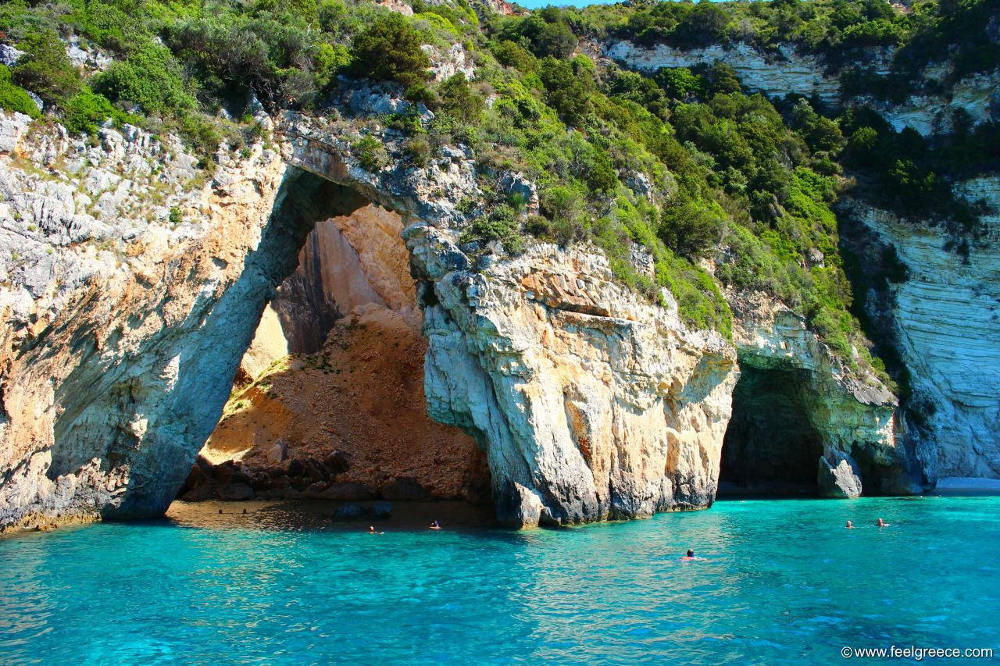
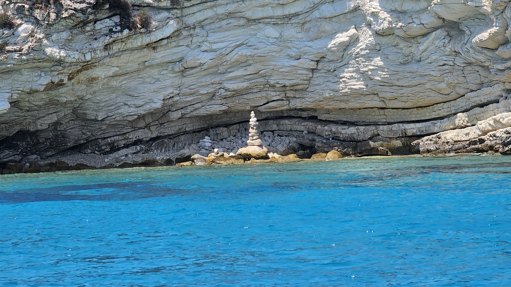

Blue Caves
The Blue Caves of Paxos are a series of sea caves that are located on the northern coast of the island of Paxos.
In person, the water really is that blue. We had gone with a speedboat from Corfu to Paxos and Antipaxos.
The caves seen above are the main Blue Caves, located at Erimitis Beach. We had gone with a sea bob, which allowed us
to go really far into the caves, without worrying about getting tired.

Secret Beach
The Secret Beach is a hidden gem located on the island of Paxos. The beach is only accessible by boat, and is
surrounded by towering cliffs and crystal-clear waters. It's extremely small, so not many people actually
stop to lounge, but it's a great place for photos. I took the picture above. It's a rock structure that someone had built,
likely within the past few days. I thought it was really cool!